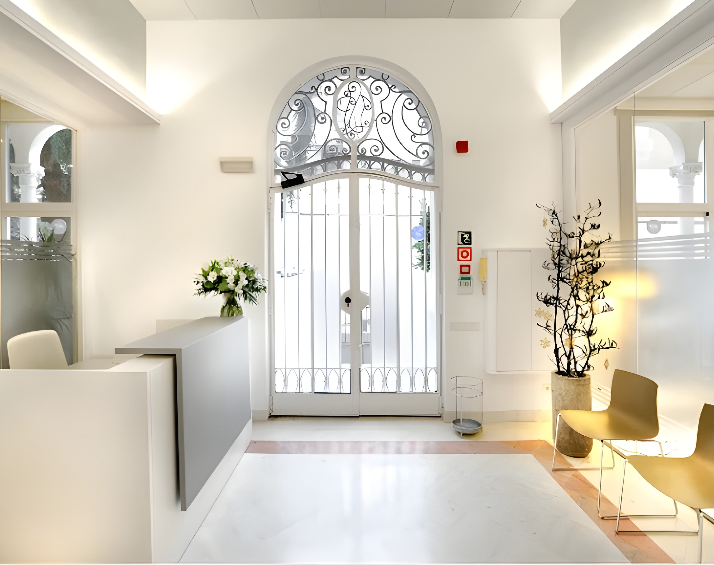

Dirección de diseño de uniformes
Uniformes personalizados para clínica dental: construir un vestuario de equipo alineado con la marca en Barcelona

Cuando una clínica dental premium revisa su imagen, el cambio rara vez se limita al logo, la web o el interiorismo. El vestuario del equipo también forma parte de esa transformación. En entornos con expectativas altas, cada detalle visible influye en confianza y calidad percibida.
Este proyecto para una clínica del Passeig de Gracia partía de una ambición clara: salir de los códigos visuales del estudio dental clásico y construir un entorno más contemporáneo, más cuidado y más coherente con la marca.
Por qué las clínicas premium replantean la ropa del equipo
En salud, la competencia profesional no se percibe solo por equipamiento y titulaciones. También se lee en el espacio, en el trato y en cómo se presenta el equipo en recepción, salas de espera y zonas de transición.
El vestuario, por tanto, no es una capa secundaria. Es parte de la infraestructura del servicio y de la experiencia de paciente.
Empezar por el espacio, no por el catálogo
La dirección del vestuario se definió desde el contexto real de la clínica: interiores, materiales, cambios cromáticos, distribución y atmósfera. En lugar de elegir una prenda estándar y añadir logotipo, se tradujo el lenguaje del espacio a prendas.
El objetivo era conservar profesionalidad médica, pero suavizar códigos clínicos rígidos para lograr un entorno más humano y elevado sin perder funcionalidad.
Traducir marca a prendas reales
Con un equipo compacto, el proyecto permitió más precisión en roles, preferencias y ajuste. No se trató como un programa masivo de uniformidad, sino como un sistema por funciones con coherencia común.
Se buscó equilibrio: profesional sin rigidez, limpio sin frialdad, contemporáneo sin tendencia pasajera. Escotes, mangas, bolsillos, cierres y proporciones se resolvieron con ese criterio.
Selección de tejidos para uso clínico real
En clínica dental, la selección textil debe funcionar en imagen y operativa al mismo tiempo. Se requiere transpirabilidad para turnos largos, estabilidad de forma y color tras lavados frecuentes, y presencia limpia bajo iluminación intensa.
La respuesta suele estar en mezclas equilibradas: fibras naturales para confort y tacto, fibras técnicas para resistencia, recuperación y mantenimiento.
Salir de la imagen dental clásica
Las uniformidades tradicionales comunican utilidad básica, pero aportan poca identidad. Esta clínica buscó una lectura más conectada con su arquitectura, su ubicación y la experiencia que quería ofrecer.
No se trata de convertir clínica en moda, sino de aplicar una disciplina de coherencia similar a la de otros entornos premium de servicio.
De la selección a la producción
Tras definir dirección, el trabajo pasó a desarrollo y muestrario: ajustes de patrón, bajos, bolsillos, cierres y validación de comportamiento real de tejidos. Ahí se decide si un sistema uniforme funciona de verdad en el día a día.
Conclusión
Este caso en Barcelona demuestra que el vestuario de equipo puede elevar una marca sanitaria cuando se diseña como sistema: presentación profesional, confort operativo, rendimiento textil y coherencia con el espacio.
Para negocios de servicio que buscan mayor consistencia, el vestuario es una herramienta concreta de diseño estratégico. Puede ver casos relacionados en estudios de bienestar y hostelería premium.